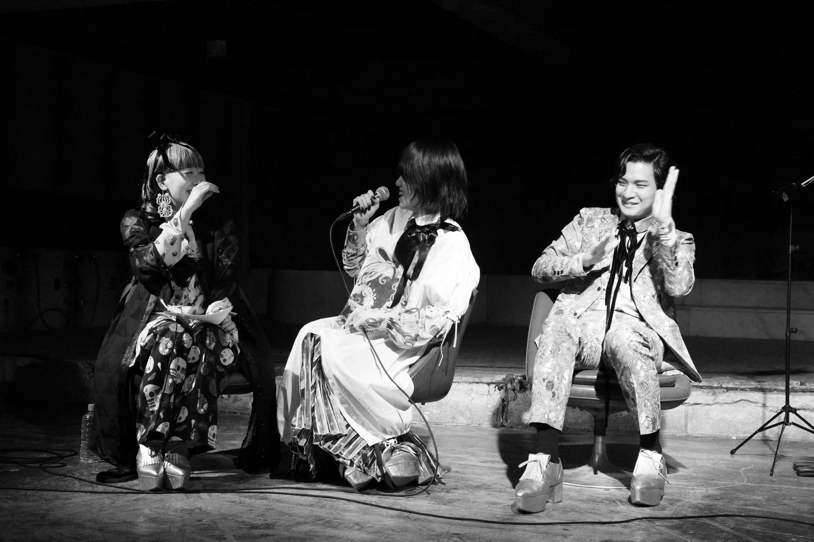
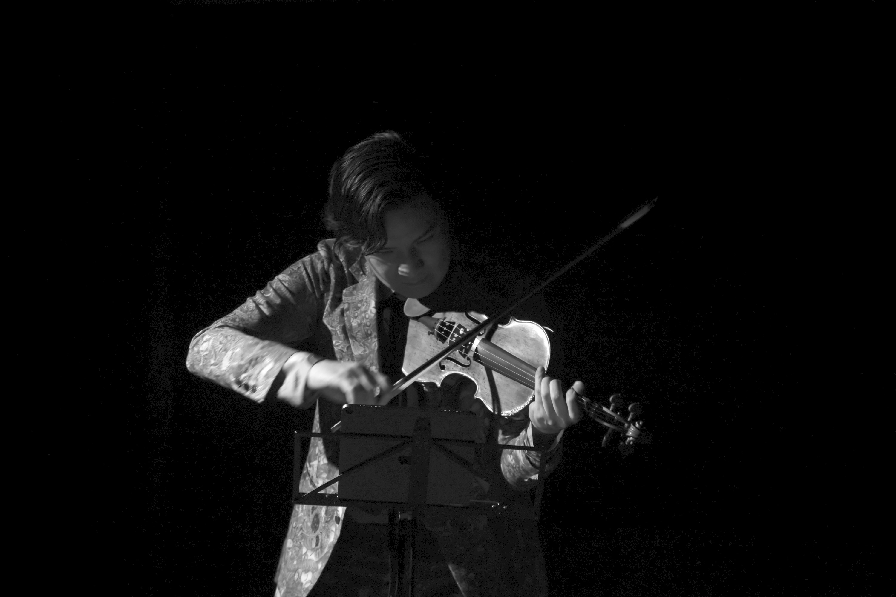

works
mumyo
Gothic and Lolita
ゴシック・アンド・ロリータ
project as collective mumyo
composition: Yuri Umemoto, Akiko Yamane violin: Tatsuki Narita
*Gothic and Lolita = japanese street fashion aesthetics

This project connects Western art music (classical) with the Japanese-born, Western-inspired fashion subculture “Gothic Lolita” through compositions by Yuri Umemoto & Akiko Yamane and a solo violin performance by Tatsuki Narita.
西洋芸術（クラシック）音楽と、日本で発祥し西洋を参照したファッション・サブカルチャー「ゴシックロリータ」を、梅本佑利＆山根明季子の楽曲群と成田達輝のヴァイオリン独奏によって、接続した。
 photo by Ayano Sudo, 2023
concert 2023.4.2 [link]
composed by Yuri Umemoto and Akiko Yamane
performed by Tatsuki Narita
illustration: NABEchan
Ribbon flesh and blood and vapor
Pannier clothing, Aesthetic
Copy and paste, mass produced/consumed irregular/imperfectly shaped plastic pearls and Me.
Embellish Me!
Bourrée with black ribbons
Ribbon Accumulation
Alice in Abandoned Akihabara
Melt Me!